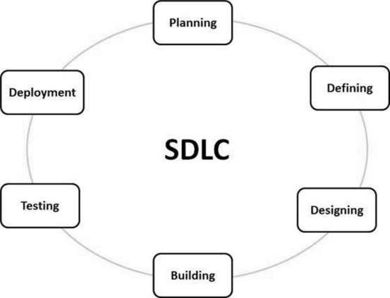

Software Engineering.
Principles, methodologies, and practices for building resilient, scalable software systems.
What is Software Engineering?
Definition
Software Engineering is the process of designing, developing, testing, and maintaining software. It is a systematic and disciplined approach to software development that aims to create high-quality, reliable, and maintainable software.
Software engineering includes a variety of techniques, tools, and methodologies, including requirements analysis, design, testing, and maintenance.
The application of a systematic, disciplined, quantifiable approach to the development, operation, and maintenance of software; that is, the application of engineering to software.
Advantages
Improved Quality
By established software engineering principles and techniques, the software can be developed with fewer bugs and higher reliability.
Increased Productivity
Using modern tools and methodologies can streamline the development process, allowing developers to be more productive and complete projects faster.
Better Maintainability
Software that is designed and developed using sound software engineering practices is easier to maintain and update over time.
Increased Customer Satisfaction
By involving customers in the development process and developing software that meets their needs.
Better Security
By following the Software Development Life Cycle (SDLC) and performing security testing, software engineering can help to prevent security breaches and protect sensitive data.
The SDLC
The Software Development Life Cycle (SDLC) is a framework defining tasks performed at each step in the software development process.

Stage 1: Planning and Requirement Analysis
Requirement analysis is the most important and fundamental stage in SDLC. It is performed by the senior members of the team with inputs from the customer, the sales department, market surveys and domain experts in the industry. This information is then used to plan the basic project approach and to conduct product feasibility.
Planning for the quality assurance requirements and identification of the risks associated with the project is also done in the planning stage.
Stage 2: Defining Requirements
Once the requirement analysis is done the next step is to clearly define and document the product requirements and get them approved from the customer or the market analysts. This is done through an SRS (Software Requirement Specification) document which consists of all the product requirements to be designed and developed during the project life cycle.
Stage 3: Designing the Product Architecture
SRS is the reference for product architects to come out with the best architecture for the product to be developed. Based on the requirements specified in SRS, usually more than one design approach for the product architecture is proposed and documented in a DDS - Design Document Specification.
This DDS is reviewed by all the important stakeholders and based on various parameters as risk assessment, product robustness, design modularity, budget and time constraints, the best design approach is selected for the product.
Stage 4: Building or Developing the Product
In this stage of SDLC the actual development starts and the product is built. The programming code is generated as per DDS during this stage. If the design is performed in a detailed and organized manner, code generation can be accomplished without much hassle.
Developers must follow the coding guidelines defined by their organization and programming tools like compilers, interpreters, debuggers, etc. are used to generate the code. Different high level programming languages such as C, C++, Pascal, Java and PHP are used for coding. The programming language is chosen with respect to the type of software being developed.
Stage 5: Testing the Product
This stage is usually a subset of all the stages as in the modern SDLC models, the testing activities are mostly involved in all the stages of SDLC. However, this stage refers to the testing only stage of the product where product defects are reported, tracked, fixed and retested, until the product reaches the quality standards defined in the SRS.
Stage 6: Deployment in the Market and Maintenance
Once the product is tested and ready to be deployed it is released formally in the appropriate market. Sometimes product deployment happens in stages as per the business strategy of that organization. The product may first be released in a limited segment and tested in the real business environment (UAT- User acceptance testing).
Then based on the feedback, the product may be released as it is or with suggested enhancements in the targeting market segment. After the product is released in the market, its maintenance is done for the existing customer base.